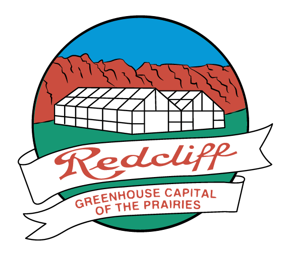

There are many key factors that contribute to why Redcliff is the Greenhouse Capital of the Prairies, with range from an environmental advantage, and the easy access to transportation, to the over abundance of natural gas resources. The town of Redcliff is historically known for the serveral long continuous hours of sunlight which support the growth of neumorous different crops. As well as having easy access to water which was gathered from the South Saskatchewan River and carried through the Coulees. This town is also located right on the edge of the TransCanada Highway so arraging transportation to their consumers happens seemlessly.

Hubers Farmers Market is the biggest farm within Redcliff that supplies the town and surrounding area with fresh fruits and vegetables. They are located on the far west side of Redcliff. Their little store is located right at the end of Broadway, and if you keep driving down the dirt road you will pass where they grow all of their produce. Between the month July and October you will see a beautiful array of colors as al the different crops blossem and ripen.